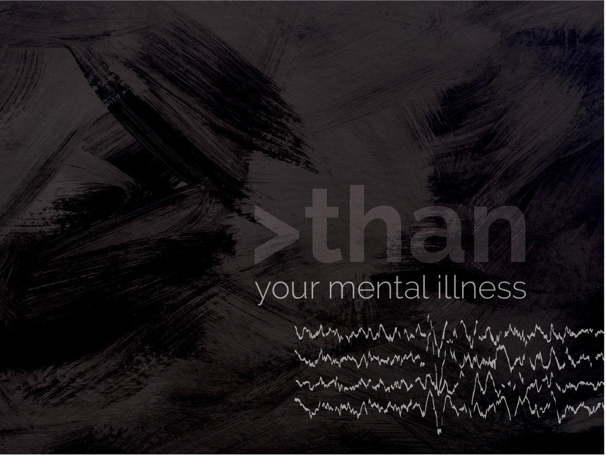
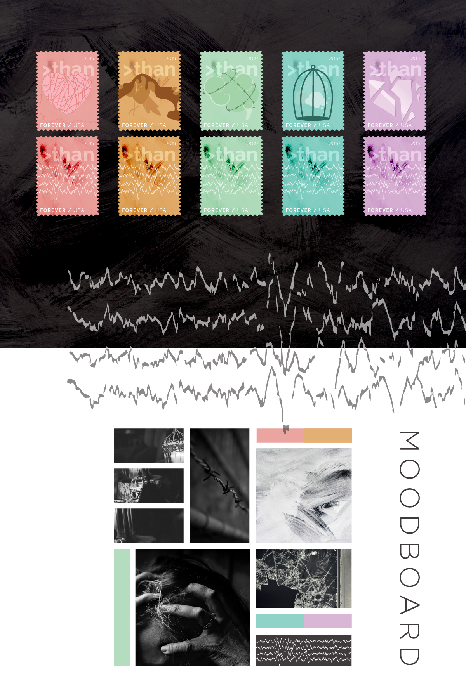
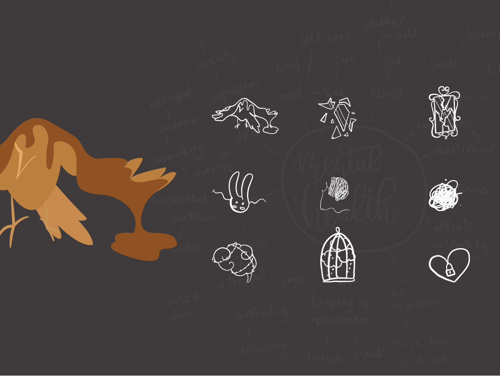
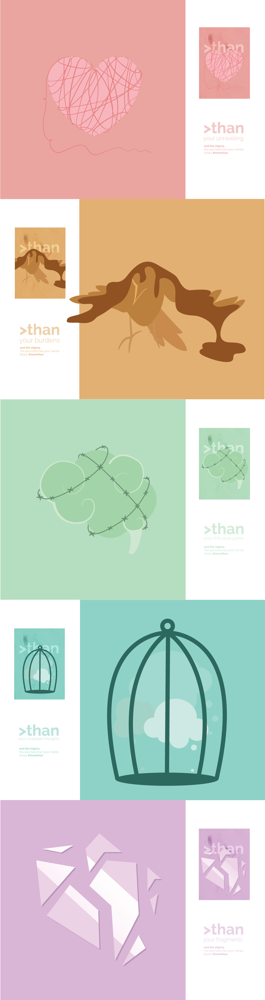
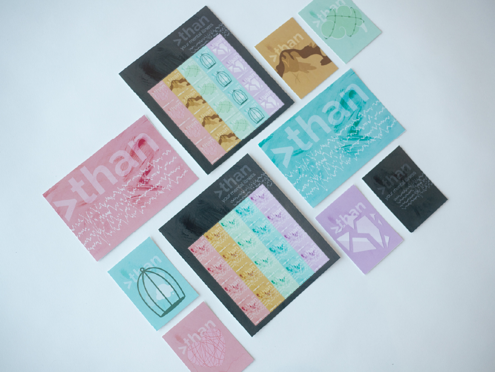
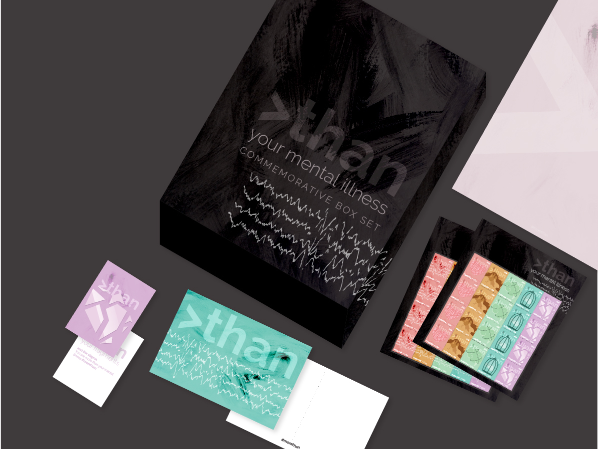
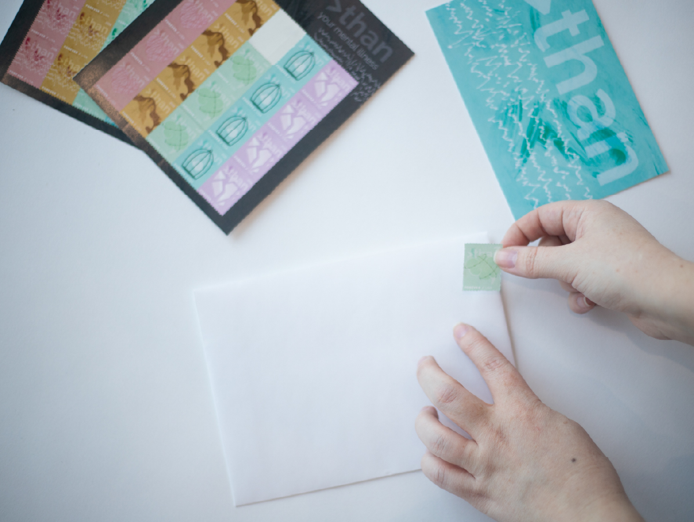

Problem
As designers, we have an opportunity to use our voice to spread awareness and advocate for causes we believe in. Mental health advocacy is important to me, and this project reflects that.
Solution
The solution was to come up with a project to use my voice to raise awareness. I created a mental health awareness campaign, centered around postage stamp designs. The thinking behind this is the use of the stamps would advocate for the issue, and the act of writing out messages and mailing is an act of self-care that makes both sender and recipient happy.
Process
I wanted to depict certain feelings that go along with mental health, specifically the inner turmoil one goes through. I represented broken, painful, and trapped thoughts. I chose to pair this dark imagery with muted rainbow hues, to show the idea of the whole spectrum of mental health – good and bad.
A lot of my process involves word associations and mind-maps. I approached this project in a flat vector style. From that point, I sketched these mental health concepts, specifically choosing to be abstract. Those I felt successful with were taken to flat illustrations.
Concepts explored included: unraveling self (coming undone), intrusive and painful thoughts, being shattered and broken inside, caged and unspoken thoughts, and being suffocated or burdened by weight (heavy things don't fly).
I styled the campaign itself around the concept of mental health as well. I chose visual elements that combat with each other, but come together as a whole. A friendly typeface was chosen, paired with a disorderly texture.
Result
The campaign included a cohesive set of stamps and postcards, with two stamp sets: one with chaotic texture and type, and the other with iconic illustration. This allows for the literal feeling of mental illnesses to be visualized, as well as more abstract concepts that all people can relate to.
To further the campaign into active use, it was pushed beyond just postage. Postcards, stationery, trading cards, and stamps are included in a commemorative box set to encourage users to collect the set and share it with others. Awareness is then spread through gifting and using the materials to send mail to others.
The goal of this campaign was to promote mental health awareness and the act of self-care. This is achieved through the support of the campaign, and the use. Sending snail mail is a much more personal method of communication, that brings a sense of joy and good to both sender and recipient.






